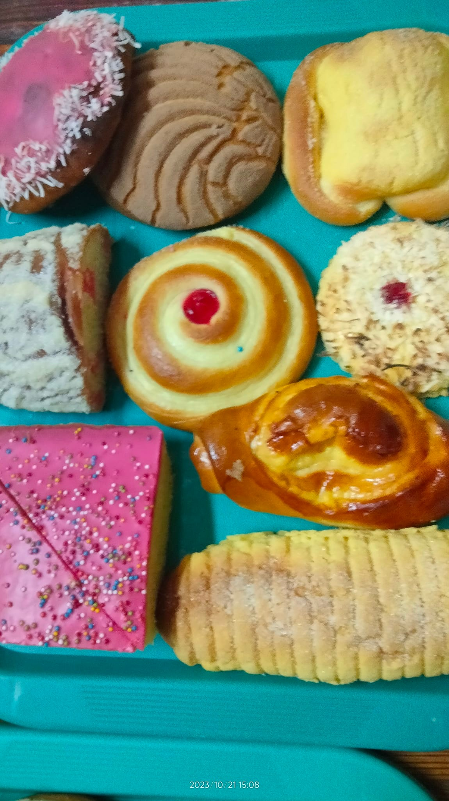

El objetivo que tenemos con esta página web es volvernos una opción más atractiva al momento de encontrar esta página
Igual que la masa madre hay que estar bonita desde el comienzo y creemos que este diseño es el más adecuado, pues los cortadillos son el mejor tipo de pan y el diseño lo representa de esa forma

Nuestro objetivo es ser la mejor opción
1. Página Principal
2. Introducción
3. Desarrollo
4. Conclusiones
5. Bibliografía
6. Productos